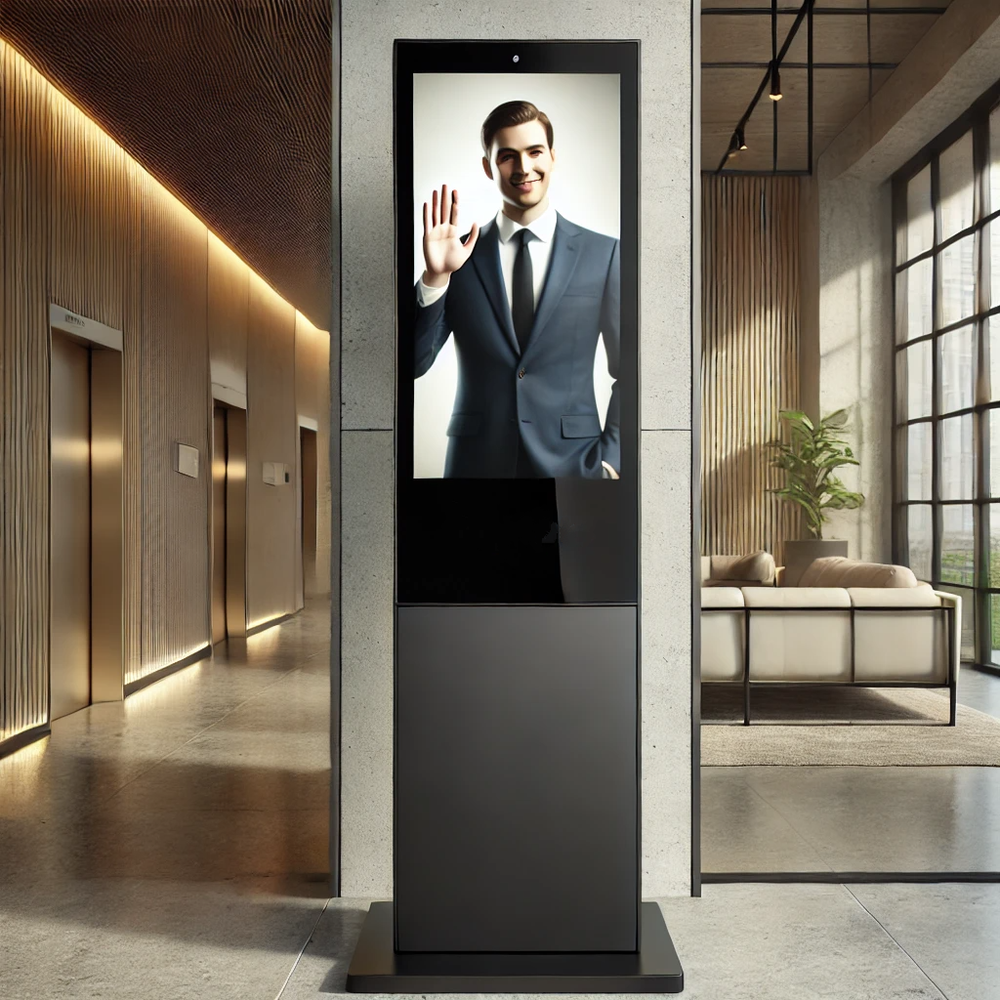
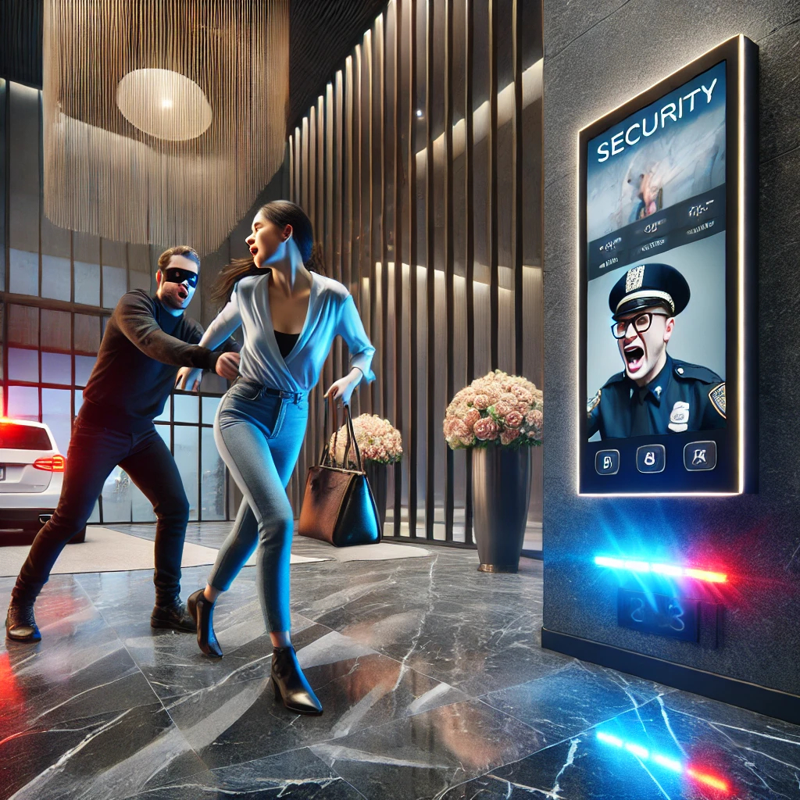
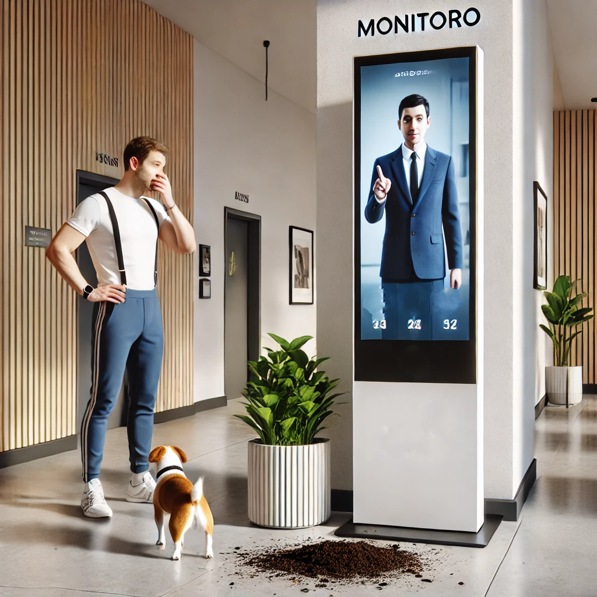
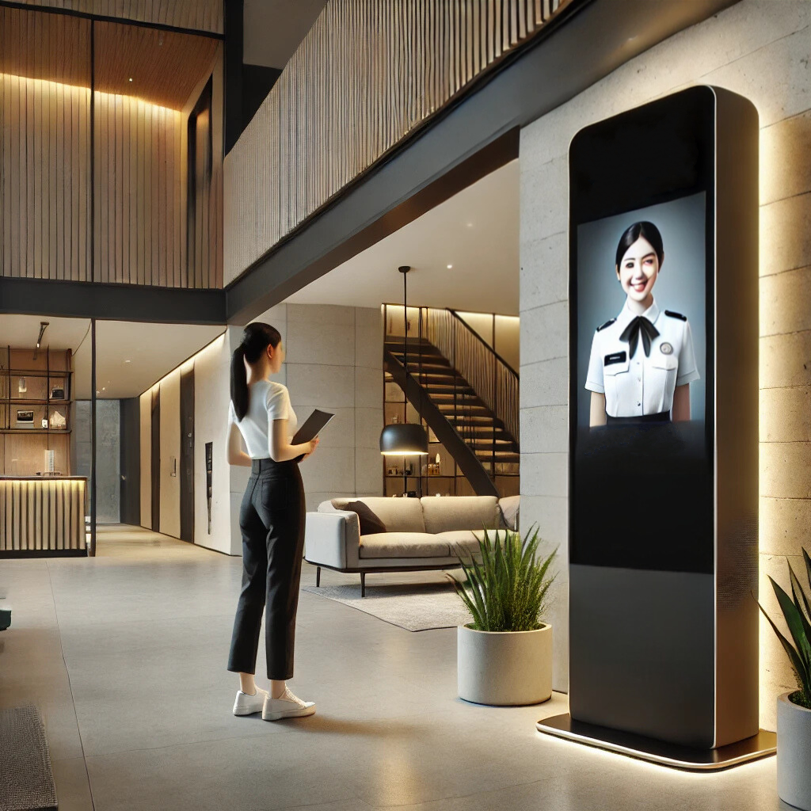
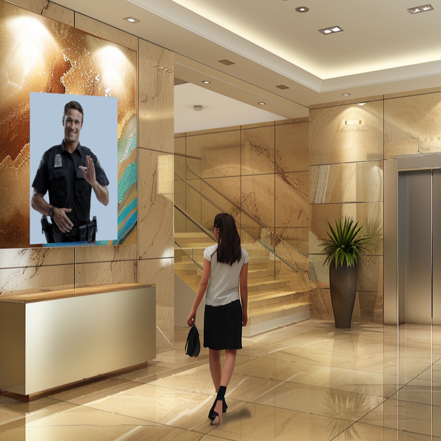

Monitoro este un sistem avansat care asigură securitatea și supravegherea zonei de acces în clădirea ta, oferind monitorizare și intervenție în timp real. Cu ajutorul comunicațiilor bidirecționale și a unei echipe de dispeceri antrenați, dedicați și pregătiți, elimină nevoia de prezență fizică permanentă în locație, garantând eficiență și costuri mult reduse, comparativ cu sistemele clasice de securitate.
Descurajare
Dispeceri calificați
Monitorizare în timp real 24/7
Inteligență artificială
Sistem inteligent de supraveghere video și comunicare bi-direcțională pentru clădiri rezidențiale și de birouri. Datorită combinației dintre o echipă de agenți de pază specialiști și tehnologii digitale, Monitoro verifică ce se întâmplă în locație 24 de ore pe zi și oferă un răspuns rapid la o situație de risc sau de urgență.
Un totem inteligent, dotat cu tehnologie avansată, este amplasat la intrarea în clădire, proiectând prezența virtuală a unui agent de securitate. Vizibilitatea acestuia descurajează și reduce semnificativ intențiile infracționale, oferind în același timp posibilitatea de interacțiune în timp real pentru locatari și vizitatori.
Sistemul include mai multe camere audio-video, conectate direct cu dispecerii de la Centrul de Control Monitoro. Echipa Monitoro nu înseamnă paznici clasici, ci agenți antrenați, dedicați și eficienți, gata să intervină prompt și să ofere siguranță reală. Aceștia asigură supravegherea continuă a punctelor de acces și permit identificarea rapidă a oricăror activități suspecte.
Monitorizarea activă a lobby-ului asigură un mediu sigur prin intervenții imediate în cazul unor situații periculoase. Sistemul permite atenționări verbale, activarea semnalelor acustice și luminoase pentru descurajare, precum și posibilitatea de alertare a autorităților sau a firmelor de pază pentru intervenții rapide.
Dispecerul identifică rapid abaterile de la regulamentul clădirii și transmite notificări persoanelor implicate. Fie că este vorba de comportamente inadecvate sau de nerespectarea regulilor de utilizare a spațiilor comune, măsurile de atenționare contribuie la menținerea unui mediu civilizat și ordonat.
“Securitate inteligentă pentru clădirile rezidențiale și de birouri, cu scopul de a crește protecția și a reduce costurile.”
Platforma oferă un serviciu digital de recepție, gestionând eficient solicitările locatarilor și transmiterea acestora către administrator. Vizitatorii și rezidenții pot primi informații utile despre regulamentul de ordine interioară, contactele relevante sau procedurile pentru livrări și depozitarea coletelor.
Sistemul Monitoro supraveghează clădirea în permanență, indiferent de oră sau condiții de lumină. Fie zi sau noapte, fiecare eveniment este monitorizat în timp real, asigurând un răspuns rapid și eficient la orice situație. Astfel, siguranța locatarilor și respectarea regulamentului sunt garantate fără întrerupere.

Siguranța clădirii sau a afacerii tale poate fi gestionată mai eficient cu un
sistem de securitate inteligent. Descoperă cum te poate ajuta Monitoro!